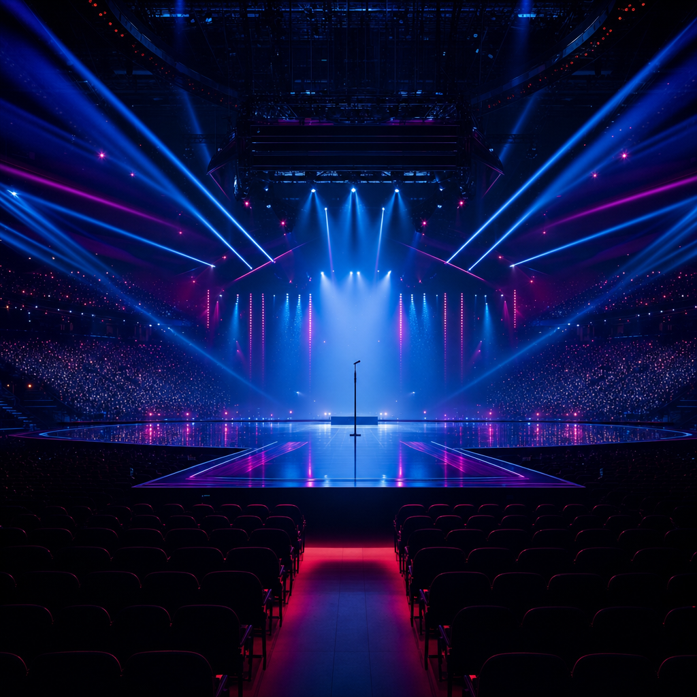

Forty-seven years of Eurovision votes show that the contest is two things at once - a song competition and a televised diplomatic exchange. When they collide, the map usually wins.
In 35 grand finals where Cyprus could vote for Greece, Cyprus gave Greece the maximum 12 points 28 times - 80 percent of the time.
If Cyprus picked any other country at random, the chance of awarding 12 points to one specific neighbor in a 26-country final is about 1 in 25, or 4 percent. Cyprus's actual rate is twenty times that.
No other directed pair in 47 years of Eurovision voting comes close to this. Greece returns the favor 71 percent of the time. Together, they have exchanged the maximum 50 times.
Of the 35 grand finals where Cyprus could vote for Greece, what % did Cyprus give Greece the maximum 12 points? Drag the slider, then reveal.
Your guess: 20%
Across every grand-final country-to-country vote since 1975, when both voter and recipient sit in the same regional bloc - Nordic, ex-Yugoslav, ex-Soviet, or the Greek-Cypriot pair - the average points awarded is 5.26. When the recipient is outside that bloc, the average is 2.31.
The Greek-Cypriot pair is the most extreme: their internal average vote is 10.98 points, almost five times what they give anyone else. The ex-Yugoslav bloc averages 7.40 inside, 1.99 outside. Nordics: 4.88 vs 2.19.
Look at the lifetime sum of points flowing between specific pairs and the same map redraws itself. Cyprus to Greece: 394 points across 47 years. Denmark to Sweden: 366. Norway to Sweden: 360. The top thirty country-to-country flows are dominated by Nordic-internal trades, the Greek-Cypriot bilateral, and the Iberian and Anglo-Irish exchanges.
When the EBU re-introduced 50/50 jury+televote scoring in 2009, the explicit goal was to dilute Eastern-bloc and other regional alliances - to bring back the song.
The data say it shaved bloc bias only modestly. Pre-2009: in-bloc votes averaged 5.61, out-of-bloc 2.54, ratio 2.21. Post-2009: 5.03 vs 2.10, ratio 2.40.
The absolute gap shrank by half a point. The proportional gap - how much more your bloc gives you than strangers do - actually grew. Bloc voting persisted in roughly the same shape; the reform reshuffled which entries win, not how regions vote for each other.
On May 14, 2022, three months after Russia's full-scale invasion, Kalush Orchestra performed 'Stefania' under Italian lights in Turin. The juries placed them fourth, behind the United Kingdom, Sweden, and Spain. The televote placed them first by a chasm.
Inside Ukraine's 631-point winning total, the dataset records a 192-to-432 split. Jurors gave the song 192 points - 39 voting countries handed out only 5 maximum scores. The public gave 432 points: 28 of 39 televoting countries awarded 12.
Frontman Oleh Psiuk closed the performance by pleading for the world to free the Ukrainian fighters trapped under the Azovstal steel plant in Mariupol. The EBU declined to penalize the band, calling the comments humanitarian rather than political.
Ukraine 2022 is dramatic but not unique. Since the EBU started publishing split jury and televote scores in 2016, several entries have finished at opposite ends of the two rankings.
Poland's 'Color Of Your Life' was 25th of 26 by the jury in 2016 and 3rd by the public - a 22-place spread, the largest in the split-score era. Australia 2017 went the other way (4th jury, 25th public). Sweden 2018 (2nd jury, 23rd public) and Moldova 2022 (20th jury, 2nd public) are the next-largest gaps.
These are not music-criticism gaps. They are sociology.
Sweden has been awarded 12 points 110 times since 1975 - more than any other country. Ukraine is second (83), the United Kingdom third (73), Italy fourth (72), Greece fifth (70).
Sweden's tally is partly Nordic bloc gravity - Denmark, Norway, Iceland, and Finland all rank Sweden among their lifetime favorites - but it is also actual wins. With six Eurovision victories and ABBA's 'Waterloo' as the contest's most-celebrated song, Sweden's place in the top of the table is structural.
Across the full record, Ireland leads with 7 wins (1970, 1980, 1987, 1992, 1993, 1994, 1996), Sweden is second with 6, and only 27 of the 52 ever-competing countries have won at all.

Three winners anchor the contest's cultural memory.
ABBA's 'Waterloo' won Eurovision 1974 for Sweden with 24 points - the modest tally is an artifact of the era's voting cap. The song was later voted the best in the contest's history.
Lordi's 'Hard Rock Hallelujah' won 2006 for Finland on 292 points - a record at the time, performed in monster prosthetics, the country's only Eurovision victory.
Austria's Conchita Wurst won 2014 with 'Rise Like a Phoenix' on 290 points. The win, by a drag artist in a beard, became one of Eurovision's most-cited statements on LGBTQ+ visibility in Europe.
Eurovision started in 1956 with seven countries. Through the late 1980s the field hovered between 18 and 22. Then the Soviet Union fell and Yugoslavia broke up, and the count climbed: 26 by 2003, 36 in the first semi-final year of 2004, 43 by 2008.
The geographic center of gravity moved with the field. Through the 1990s, no Eastern European country had ever won. From 2000 to 2009, five did - Estonia 2001, Latvia 2002, Ukraine 2004, Serbia 2007, Russia 2008 - and Western Europe won zero. It is the only decade in 66 years in which the Western bloc was shut out completely.
The 2010s redistributed: Western 4, Nordic 3, Eastern 2, Mediterranean 1. Ukraine 2022 then made it Eastern Europe's first 2020s win. The map keeps moving.
Cyprus and Greece have given each other 12 points 50 times. Moldova and Romania, 22. Denmark and Sweden, 17. Norway and Sweden, 17. Portugal and Spain, 13. Eight of the top twelve mutual-12-point pairs lie within the same regional bloc.
None of this means Eurovision is rigged. It means Eurovision was never only a song competition. It was always a song competition stacked on top of a televised diplomatic exchange between national broadcasters and their viewing publics, and the data reveal both layers at once.
When Cyprus gives Greece 12 points, what is being measured is not 'best song'. It is something older and stranger: a 47-year unbroken civic ritual that says, every May, we vote for our neighbors. The song is the excuse. The points are the message.